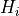
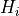
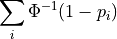
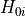
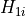
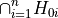
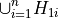

Nonparametric combination of tests¶
- class permute.npc.Experiment(group=None, response=None, covariate=None, randomizer=None)[source]¶
A class to represent an experiment.
- Attributes
- groupvector
group assignment for each observation
- responsearray_like
array of response values for each observation
- covariatearray_like
array of covariate values for each observation
- randomizerRandomizer object
randomizer to use when randomizing group assignments. default is unstratified randomization, randomize_group
Methods
Randomizer
TestFunc
make_test_array
randomize
- permute.npc.check_combfunc_monotonic(pvalues, combfunc)[source]¶
Utility function to check that the combining function is monotonically decreasing in each argument.
- Parameters
- pvaluesarray_like
Array of p-values to combine
- combinefunction
The combining function to use.
- Returns
Trueif the combining function passed the check,Falseotherwise.
- permute.npc.fisher(pvalues)[source]¶
Apply Fisher’s combining function

- Parameters
- pvaluesarray_like
Array of p-values to combine
- Returns
- float
Fisher’s combined test statistic
- permute.npc.fwer_minp(pvalues, distr, combine='fisher', plus1=True)[source]¶
Adjust p-values using the permutation “minP” variant of Holm’s step-up method.
When considering a closed testing procedure, the adjusted p-value
 for a given hypothesis  is the maximum of all p-values for tests
including as a special case (including the p-value for the
test itself).
for a given hypothesis  is the maximum of all p-values for tests
including as a special case (including the p-value for the
test itself).- Parameters
- pvaluesarray_like
Array of p-values to combine
- distrarray_like
Array of dimension [B, n] where B is the number of permutations and n is the number of partial hypothesis tests. The
 .
.- combine{‘fisher’, ‘liptak’, ‘tippett’} or function
The combining function to use. Default is “fisher”. Valid combining functions must take in p-values as their argument and be monotonically decreasing in each p-value.
- Returns
- array of adjusted p-values
- permute.npc.liptak(pvalues)[source]¶
Apply Liptak’s combining function

where
 is the inverse CDF of the standard normal distribution.
is the inverse CDF of the standard normal distribution.- Parameters
- pvaluesarray_like
Array of p-values to combine
- Returns
- float
Liptak’s combined test statistic
- permute.npc.npc(pvalues, distr, combine='fisher', plus1=True)[source]¶
Combines p-values from individual partial test hypotheses  against ,
 to test the global null hypothesis
to test the global null hypothesis
against the alternative

using an omnibus test statistic.
- Parameters
- pvaluesarray_like
Array of p-values to combine
- distrarray_like
Array of dimension [B, n] where B is the number of permutations and n is the number of partial hypothesis tests. The
.- combine{‘fisher’, ‘liptak’, ‘tippett’} or function
The combining function to use. Default is “fisher”. Valid combining functions must take in p-values as their argument and be monotonically decreasing in each p-value.
- plus1bool
flag for whether to add 1 to the numerator and denominator of the p-value based on the empirical permutation distribution. Default is True.
- Returns
- float
A single p-value for the global test
- permute.npc.randomize_group(data)[source]¶
Unstratified randomization
- Parameters
- dataExperiment object
- Returns
- Experiment object
Experiment object with randomized group assignments
- permute.npc.randomize_in_strata(data)[source]¶
Stratified randomization where first covariate is the stratum
- Parameters
- dataExperiment object
- Returns
- Experiment object
Experiment object with randomized group assignments
- permute.npc.sim_npc(data, test, combine='fisher', in_place=False, reps=10000, seed=None)[source]¶
Combines p-values from individual partial test hypotheses against ,
to test the global null hypothesisagainst the alternative
using an omnibus test statistic.
- Parameters
- dataExperiment object
- testarray_like
Array of functions to compute test statistic to apply to each column in cols
- combine{‘fisher’, ‘liptak’, ‘tippett’} or function
The combining function to use. Default is “fisher”. Valid combining functions must take in p-values as their argument and be monotonically decreasing in each p-value.
- in_placeBoolean
whether randomize group in place, default False
- repsint
number of repetitions
- seedRandomState instance or {None, int, RandomState instance}
If None, the pseudorandom number generator is the RandomState instance used by np.random; If int, seed is the seed used by the random number generator; If RandomState instance, seed is the pseudorandom number generator
- Returns
- array
A single p-value for the global test, test statistic values on the original data, partial p-values